Em um mundo onde os oceanos enfrentam desafios sem precedentes, estamos comprometidos em fazer a diferença.
Na OceanProTech, acreditamos que os oceanos são mais do que apenas vastos corpos de água - são a essência da vida em nosso planeta. Por isso, estamos empenhados em desenvolver soluções inovadoras que não apenas protejam, mas também revitalizem esses ecossistemas vitais.
NOSSO IMPACTO
Nós desenvolvemos 3 tipos de sistemas para o monitoramento das águas no oceano, com o objetivo de promover uma abordagem abrangente e eficaz para a preservação dos nossos recursos marinhos:
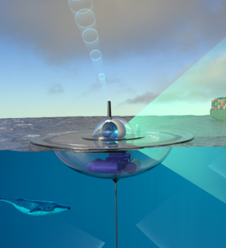
BOIAS INTELIGENTES
São equipadas com uma variedade de sensores avançados que coletam dados precisos, como temperatura, salinidade, pH e presença de poluentes. Esses dispositivos autônomos permitem entender as mudanças ambientais e detectar ameaças à saúde dos oceanos.
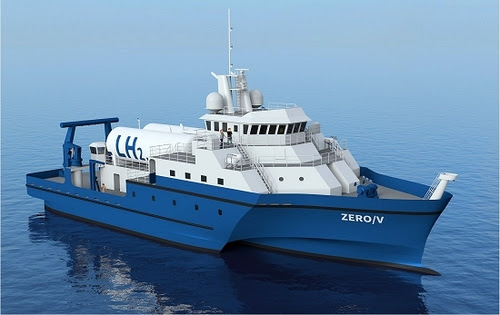
NAVIOS DE PESQUISA
São equipados com tecnologia de ponta para realizar coletas de amostras de água e sedimentos em várias regiões oceânicas.
Com laboratórios a bordo, fornecem uma visão abrangente da qualidade da água e dos impactos das atividades humanas nos ecossistemas marinhos.
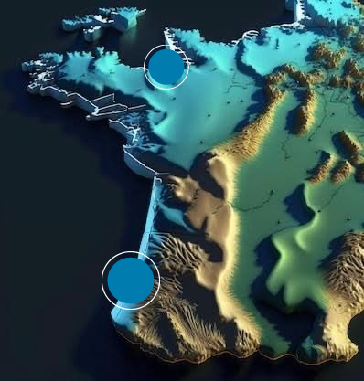
MONITORAMENTO COSTEIRO
São estações estrategicamente localizadas ao longo das costas para coletar dados contínuos sobre a qualidade da água e as condições ambientais locais. Esses pontos de observação fornecem informações cruciais para a gestão das zonas costeiras e a proteção de habitats marinhos.
PRINCIPAIS PROBLEMAS
Poluição
Mudanças Climáticas
Destruição dos Habitats Marinhos
Sobrepesca
Acidificação dos Oceanos
Poluição
A poluição dos oceanos, em 2024, continua a ser um problema ambiental de grande proporção, com consequências graves para a vida marinha, os seres humanos e o planeta como um todo.
O lançamento de produtos químicos, como agrotóxicos, fertilizantes e óleo, além da grande quantidade de lixo, despejada nos oceanos, causa danos à vida marinha contaminando as águas e matando os animais. Outro problema como o esgoto não tratado despejado nos oceanos contribui para a proliferação de doenças e a eutrofização, que leva ao desequilíbrio dos ecossistemas.
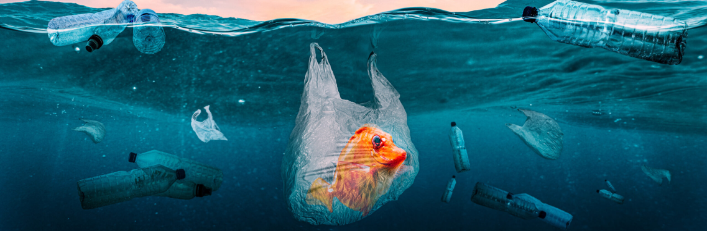
Mudanças Climáticas
2024 tem sido um ano de calor recorde para os oceanos, registrando temperaturas médias anuais que se posicionam entre as mais altas da história. Esse calor intenso, junto com os baixos níveis de gelo marinho no Oceano Antártico, contribuiu para um aquecimento sem precedentes.
Elevação do nível do mar e Intensificação de eventos climáticos extremos:
Combinado com o El Niño, as mudanças climáticas impulsionaram um aumento de 0,76 cm no nível médio global do mar entre 2022 e 2023, quase 4 vezes mais rápido que o ano anterior. Essa aceleração é preocupante, pois com a intensificação de eventos climáticos as tempestades, furacões e inundações se tornam mais frequentes e severos causando danos à infraestrutura costeira e aumentando o risco de inundações e deslizamentos de terra.
Destuição dos Habitats Marinhos
Os efeitos da destruição dos habitats marinhos nos oceanos são preocupantes. A perda contínua desses ambientes essenciais está tendo consequências devastadoras para a biodiversidade marinha, os ecossistemas oceânicos e o bem-estar humano. Abaixo estão algumas consequências:
Perda de Biodiversidade, Degradação dos Ecossistemas, Impactos Econômicos, Insegurança Alimentar, Vulnerabilidade às Mudanças Climáticas
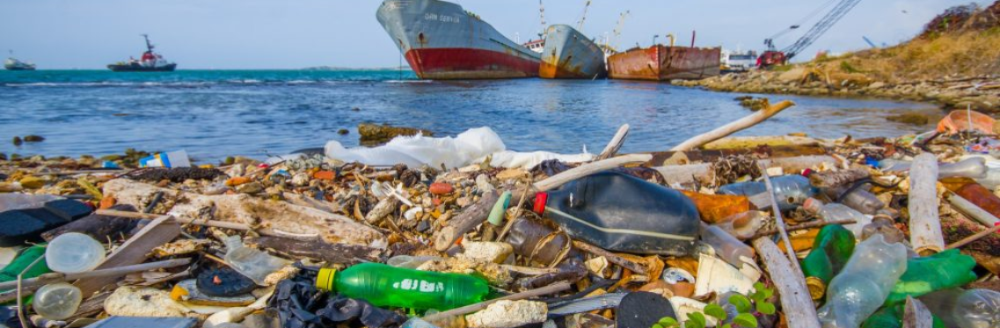
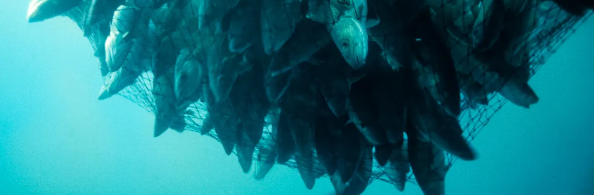
Sobrepesca
Os oceanos estão sofrendo com a sobrepesca, ameaçando ecossistemas marinhos, segurança alimentar e o futuro humano. A pesca predatória esgota estoques de peixes, levando espécies à extinção e causando desequilíbrios ecológicos, como o colapso de cadeias alimentares. Comunidades costeiras, que dependem da pesca, veem sua fonte de alimento ameaçada e enfrentam aumento de preços. Práticas insustentáveis, como a pesca de arrasto, destroem habitats essenciais, enquanto redes perdidas e detritos poluem os oceanos, prejudicando a vida marinha.
Acidificação dos Oceanos
A acidificação dos oceanos se apresenta como uma grave ameaça à saúde dos oceanos e à vida marinha, com impactos cada vez mais alarmantes. Estima-se que os oceanos já absorveram cerca de um terço de todo o dióxido de carbono (CO2) emitido pela atividade humana. Essa absorção, embora retarde o aquecimento global, tem um preço alto: a acidificação das águas. Consequências da acidificação: aumento da acidez, impacto na vida marinha, desequilíbrio na cadeia alimentar, perda de biodiversidade, ameaça aos recifes de coral, acidificação das águas profundas
Além dos impactos ambientais, a acidificação dos oceanos também tem implicações socioeconômicas, já que a pesca é atividade vital para muitas comunidades.
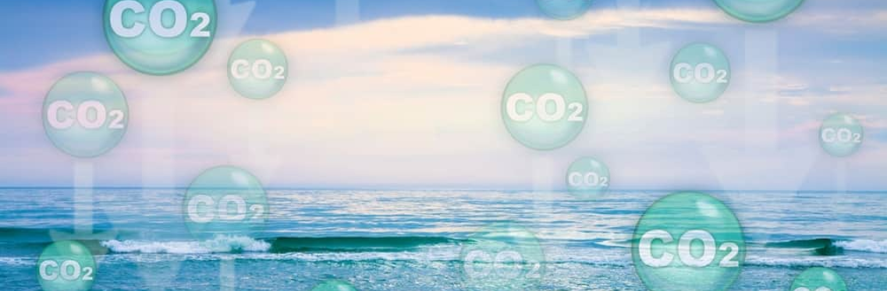
NOSSO OBJETIVO
Nós da OceanProTech temos como objetivo unir indivíduos, comunidades e organizações em prol da proteção e da preservação dos oceanos. Acreditamos que, juntos, podemos construir um futuro sustentável para os mares e para todos que dependem deles.
Aqui nós baseamos nossas ações em pesquisas científicas sólidas e nos melhores dados disponíveis. Contando com uma equipe de pesquisa que atua diretamente nas estações de monitoramento costeiro.